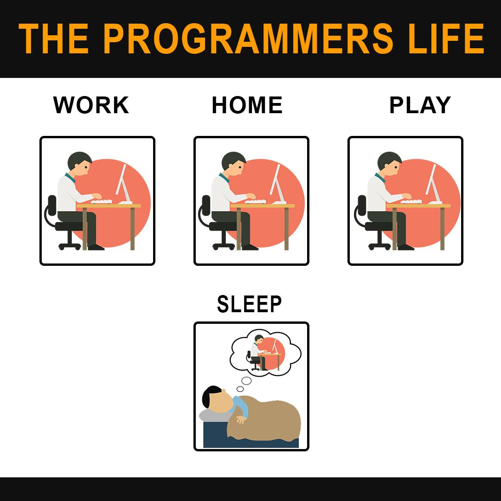

1 / 3

Caption Text
2 / 3

Caption Two
3 / 3
Caption Three
.We can't make consistency in our efforts.As a result,we anticipate that our future should be acceptable without assurance and self mental fortitude yet that thing will make you an uncouth individual but reality is success is what happens when somebody/something is able to use their own skills, physical ability and knowledge in combination with what they have access to within their environment to produce a result that has a positive effect on their life and the environment around them